Наука · журнал «ДентАрт» 2020 №4
Біоморфологічні закони та закономірності в розвитку і будові зубощелепно-лицьової системи людини. Частина II
Biomorphological Laws and Regularities in the Development and Structure of the Dento-Maxillofacial System of Human. Part II
Природа — ось що ми маємо взяти за зразок.
Ле Корбюзьє
Спіральна симетрія форм у природі і будові зубощелепно-лицьової системи людини
Симетрія форм у живій природі протягом століть викликала пильний інтерес учених як одне з найбільш дивовижних і загадкових явищ. Сам термін «симетрія» (від грец. — співмірність, яку древні філософи розуміли як окремий випадок гармонії) — узгодження частин у рамках цілого.
Німецький математик Г. Вейль запропонував визначення симетрії, згідно з яким симетричним називається такий предмет, який можна якимось певним чином змінювати, отримуючи в результаті те саме, з чого зміни починаються.1-5 У природі відомі різні приклади дзеркальних, обертальних і спіральних симетрій, а також симетрій подібності у різноманітних біологічних тілах — молекулах, квітках і пагонах рослин, у будові найпростіших і високоорганізованих тварин (рис. 1).
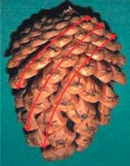
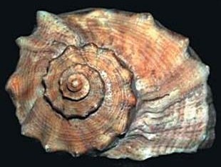
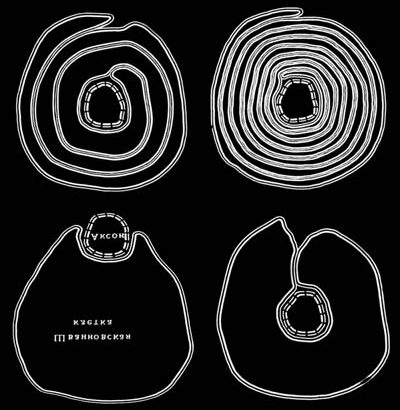
Спіралі — це різні типи кривих ліній, що закручуються навколо точки на площині або навколо осі. Спіраль — одна з найпоширеніших фрактальних форм у природі і Всесвіті.2-7,26 За М. О. Заренковим (2009), фрактали — це лінії, фігури (квадрат, трикутник та ін.) і тіла, що мають такі властивості: 1) симетрія самоподібності — «частина подібна до цілого»; 2) дробова розмірність; 3) інше, ніж у звичайних фігур, відношення периметру до площі чи інша, ніж у звичайних тіл, величина відносної поверхні.4
У 1945 році радянський учений Г. Г. Леммлейн виявив, що на дзеркально-гладенькій, рівній плоскій грані кристала є спіральні сходинки або виступи — виходи гвинтових дислокацій. Висота кожного виступу становить близько десятка міжатомних відстаней. Незалежно від Леммлейна, англійський кристалограф Франк у 1948 р. також висунув гіпотезу, що кристал росте не паралельними шарами, а спіраллю, немовби накручуючись сам на себе, весь час просуваючи вперед одну і ту ж сходинку.5 Спіраль — найбільш оптимальна за економічністю витрати будівельного матеріалу форма на мікро- і макрорівнях органічної і неорганічної природи, здатна зберігати енергію та інформацію в результаті своєї гнучкості і компактності.
Отже, така закономірність має виявлятися і в розвитку різних органів та систем організму, і зокрема в будові зубощелепно-лицьової системи людини (ЗЩЛС), яка являє собою комплекс взаємопов’язаних і взаємодіючих структурних елементів, що забезпечують у нормі гармонійну функцію всієї біомеханічної конструкції. Відомі наукові дослідження, які встановили наявність «золотої пропорції» в анатомічній будові зубів, щелеп та лиця, а також принцип росту нижньої щелепи людини за законом логарифмічної спіралі (рис. 2).6
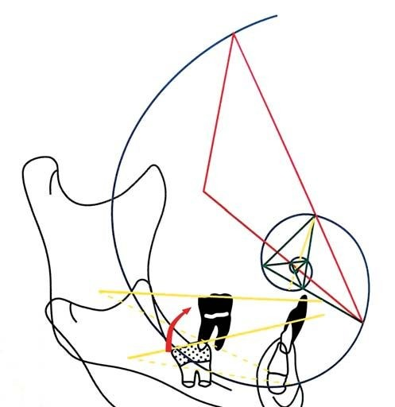
Мета нашого подальшого дослідження полягала у вивченні принципів та закономірностей формоутворення у тваринному й рослинному світі і встановленні аналогічних за своїми завданнями конструкційних рішень у будові ЗЩЛС людини.
По-перше, основою для цього послужила «клітинна теорія», сформульована Т. Шванном (1838), що обґрунтовує наявність єдиного принципу утворення і росту клітин у рослин і тварин, а отже, структурну й генетичну єдність органічної природи.
По-друге, поскільки в основі організації будь-якої живої матерії лежать принципи стійкості, самоорганізації і саморегулювання, то у формоутворенні ці принципи проявляються як самоподібність, яка породжує пов’язану систему об’єктів.
І по-третє, оскільки людина апріорі вважається невід’ємною частиною єдиної природи, то і в будові її тканин та органів мають діяти такі принципи й закономірності, як і для більшості біологічних форм.
Цікаво, що ще видатний учений і філософ Арістотель (384-322 рр. до н. е.) у своїй праці «Фізика» міркував про різні значення поняття «єдине». Він вважав, що єдине безперервне і подільне до нескінченності. Але виникає сумнів щодо частини і цілого, пише Арістотель, залишаючи без відповіді питання: «Чи буде кожна частина як неподільна утворювати з цілим єдине так само, як частини самі із собою?». У нашому дослідженні спробуємо дати відповідь на це одвічне питання.
Отже, в анатомічній будові голови можна спостерігати різноманітні криволінійні поверхні — коло (овал), параболу, еліпс, спіраль — різної протяжності, форми і масштабу (вилична кістка, верхня і нижня щелепи, кістки носа, очниці, тверде піднебіння, СНЩС та ін.), які утворюються шляхом формування і росту тканин та органів і зумовлені їх функціональною доцільністю. Їхнє різноманіття є джерелом для утворення інших, складніших форм.
Іншим прикладом, в якому простежується вплив спіральної симетрії, є утворення ліній Ретціуса. На поздовжньому зрізі зуба, як прийнято вважати, лінії Ретціуса розташовуються під кутом 15-30° (у середньому 22,5°), а на поперечних шліфах лінії розташовані у вигляді концентричних кіл, порівнюваних деякими авторами з річними кільцями росту на поперечному зрізі стовбура дерева. Вважається доведеним, що логарифмічна спіраль з кутом 22-25° є типовим контуром, реалізованим у багатьох природних об’єктах.
Як емалеві призми, так і колагенові волокна дентину в коронці зуба розташовані паралельно поздовжній осі зуба S-подібно, спіралеподібно зігнуті і забезпечують функціональну стійкість під дією вертикального навантаження. У жолобах емалевих призм на всьому протязі розташовані призми, які йдуть поруч і по ходу звиваються, даючи спіралеподібні ходи в горизонтальному напрямку, а на бічних поверхнях коронки вони поступово переміщуються у площину, перпендикулярну до довгої осі зуба, або навіть дещо ухиляються від неї у бік верхівки кореня. При з’єднанні емалевих призм проміжною речовиною утворюється надзвичайно міцна конструкція.8,9
В. Г. Васильєв (1974, 1982) виявив деякі особливості в будові волокнистих структур періодонта, раніше не описані в науковій літературі. Він виявив додаткові групи волокон, одна з яких на різних боках і рівнях утворює спіралеподібний хід пучків, що роблять два завитки навколо кореня зуба. Кут спіралі від шийки зуба до верхівки кореня послідовно збільшується від 10° до 35°. Автор також встановив, що кровоносні судини в тимчасовому і постійному прикусі у періодонті розташовуються у двох площинах — паралельно довгій осі зуба і у вигляді висхідної спіралі навколо кореня (рис. 3).10
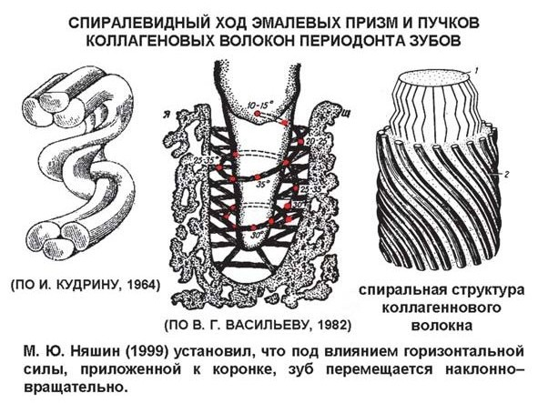
Є. І. Гаврилов, А. С. Щербаков (1984) також зазначають, що на поперечних зрізах волокна періодонта мають радіальний або тангенціальний хід, тобто розташовуються під певним кутом до поздовжньої осі зуба, причому в останньому випадку волокна можуть бути спрямовані як за годинниковою стрілкою, так і проти її ходу.11
У світлі обговорюваної теми викликає інтерес цілий ряд інших встановлених і описаних фактів (рис. 4). А. І. Бетельман (1956) вказує, що нижня щелепа в зоні кута має S-подібний вигляд. Її нижній край спрямований назовні, а верхній — досередини. Завдяки такому викривленню в цій ділянці жувальні зуби нижньої щелепи своїми щічними горбиками потрапляють у поздовжні борозенки зубів верхньої щелепи.13
М. Г. Бушан (1979), вивчаючи проблему патологічного стирання зубів, описує особливості біомеханіки жувально-мовного апарата в нормі: «Під час бокового руху у правий бік нижньої щелепи права суглобова головка скронево-щелепного суглоба робить рух у поперечному напрямку праворуч по суглобовому схилу. У той же час ліва суглобова головка здійснює рухи по схилу суглобового горбика діагонально, тобто уперед і праворуч. Ці ж рухи повторюють моляри і премоляри обох боків. Чергування діагональних і поперечних рухів нижньої щелепи визначає функціональну морфологію оклюзійної поверхні. Такий характер рухів нижньої щелепи викликає спіралеподібний тип стирання зубів».14, с. 104
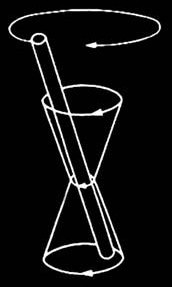
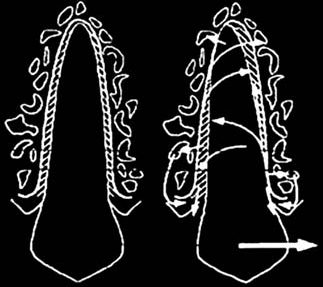
У книзі «Основи фізіології зуба» В. Р. Окушко (2005) розкриває деякі секрети біомеханіки зубощелепної системи, і зокрема те, що стосується фізіологічної рухливості зубів при їх функціонуванні. Так, міжзубні контактні пункти, що виникають спочатку при прорізуванні зубів, перетворюються на контактні поверхні (площини стирання), які в найбільш виражених випадках набувають своєрідної складної конфігурації. Ці площини, пише автор, якщо їх розглядати з жувальної поверхні, постають (у перпендикулярному перетині) у вигляді S-подібної лінії, що відповідає складному характерові руху зуба під час його функціонального навантаження.15 Про цю особливу конфігурацію контактних поверхонь згадує і С. В. Радлінський (2008) у статті «Реставрація контактних поверхонь у нижніх передніх зубах»: «По фронтальному профілю контактні поверхні нижніх передніх зубів, як і верхніх, мають S-подібну форму, що складається з опуклої коронкової та увігнутої пришийкової частин».16
Звернімо увагу на емалево-цементну межу (ЕЦМ) фронтальних зубів. Якщо провести паралельно ЕЦМ лінію по вестибулярній (язичній) поверхні на проксимальну, то вона буде S-подібної форми. Розглянемо анатомічний опис цієї структури на фронтальних зубах, акцентуючи увагу на проксимальних поверхнях, поскільки на них розташовані контактні майданчики, і спробуємо визначити їх функціональний взаємозв’язок.
За медіальної і дистальної норм геометричний опис коронок верхніх і нижніх фронтальних зубів близький до трикутника, але за формою бічні поверхні більше нагадують викривлений клин, за рахунок угнутості язичної поверхні. Важливим моментом в описовій характеристиці є відмінність у вираженості кривизни емалево-цементної межі (ЕЦМ) на контактних поверхнях. Відомо, що на медіальній стінці опуклість ЕЦМ у бік ріжучого краю коронки більша, ніж на дистальній (рис. 5).
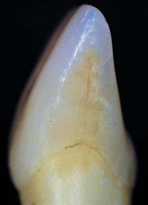
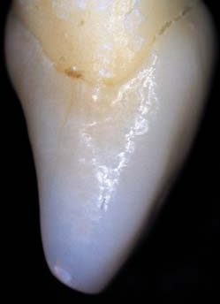
Так, у верхнього медіального різця, за даними одонтометрії R. C. Wheeler (1954), амплітуда кривизни ЕЦМ на медіальному боці — 3,5 мм, на дистальному — 2,5 мм. За J. B. Woelfel (1997), амплітуда кривизни ЕЦМ на медіальному боці становить 1,4-4,8 мм, а на дистальному — 0,7-4,0 мм. Проведені власні дослідження на видалених за медичними показаннями зубах засвідчили, що площа проксимальних поверхонь різниться і залежить від форми коронки та напрямку кореня (прямолінійний чи відхилений у дистальний бік).
У верхнього латерального різця, за R. C. Wheeler (1954), амплітуда кривизни ЕЦМ на медіальному боці — 2,8 мм, на дистальному — 1,3-4,0 мм. За J. B. Woelfel (1997), амплітуда кривизни ЕЦМ на медіальному боці — 2,0 мм, на дистальному — 0,8-3,7 мм (рис. 5, 6).
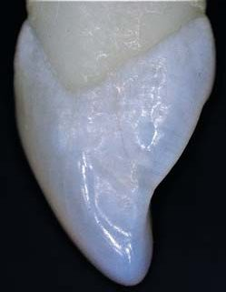
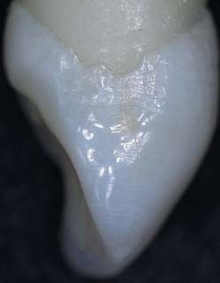
У ікла верхньої щелепи, за R. C. Wheeler (1954), амплітуда кривизни ЕЦМ на медіальному боці — 2,5 мм, на дистальному — 0,3-4,0 мм. За даними J. B. Woelfel (1997), амплітуда кривизни ЕЦМ на медіальному боці — 1,5 мм, на дистальному — 0,2-3,5 мм.17
Вестибулярний контур коронки нижнього медіального різця слабо опуклий і нерідко близький до прямої лінії. Кривизна ЕЦМ більша з медіального боку, ніж з дистального. За R. C. Wheeler (1954), амплітуда кривизни ЕЦМ на медіальному боці — 3,0 мм, на дистальному — 1,0-3,3 мм. За J. B. Woelfel (1997), амплітуда кривизни ЕЦМ на медіальному боці — 2,0 мм, на дистальному — 0,6-2,8 мм.
Коронка нижнього латерального різця мало відрізняється формою від нижнього медіального, але зазвичай вона ширша і більша, часто має нерівну довжину проксимальних країв, причому дистальний край довший. Вестибулярна поверхня опукла, але вона буває і зовсім плоскою, а для язичної поверхні характерна, різною мірою, увігнутість у середній частині коронки і опуклість у шийковій третині, в проксимальних контурах нагадуючи трикутну форму спинного плавника водних хребетних.
За R. C. Wheeler (1954), амплітуда кривизни ЕЦМ на медіальному боці — 3,0 мм, на дистальному — 1,0-3,6 мм. За J. B. Woelfel (1997), амплітуда кривизни ЕЦМ на медіальному боці — 2,0 мм, на дистальному — 0,8-2,4.
На іклі нижньої щелепи, за R. C. Wheeler (1954), амплітуда кривизни ЕЦМ на медіальному боці становить 2,9 мм, а на дистальному — 0,2-4,8 мм. За J. B. Woelfel (1997), амплітуда кривизни ЕЦМ на медіальному боці становить 1,0 мм, а на дистальному — 0,2-3,5 мм.17
Власне, форма коронок фронтальних зубів і хвилеподібна лінія ЕЦМ говорять про оптимальність природної біоінженерної конструкції навіть у тому випадку, якщо розглядати тільки її емалевий покрив. Така форма у поздовжньому перетині нагадує будову гілки нижньої щелепи, верхню 1/3 стегнової кістки, звід стопи, в яких маємо арковий тип будови.
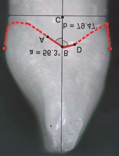
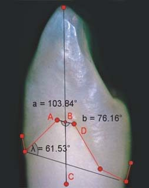
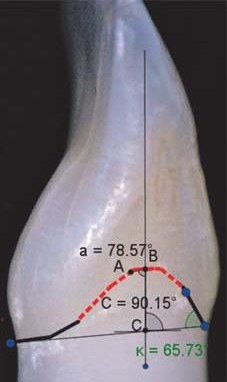
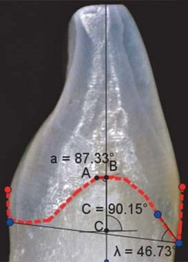
Звернімося до деяких фактів з історії архітектури. У 1866 р. швейцарський інженер К. Кульман підвів теоретичну базу під відкриття, зроблене в науковій роботі швейцарського професора анатомії Х. фон Мейєра. Фон Мейєр виявив, що головка стегнової кістки вкрита витонченою мережею мініатюрних кісточок із строгою геометричною структурою, завдяки яким функціональне навантаження перерозподіляється по кістці, особливо в тому місці, де вона згинається і під кутом входить у суглоб. Природне рішення розподілу навантаження за допомогою кривих супортів використав А. Г. Ейфель (1832-1923) у 1889 р. при створенні креслення Ейфелевої вежі. Ця споруда вважається одним з найбільш ранніх очевидних прикладів використання біоніки в інженерії.
У будівельній механіці кроквяна ферма — це проста трикутна, що складається з двох з’єднаних на вершині симетрично розташованих похилих ніг, прямих або криволінійно вигнутих в одній площині, а нижні кінці спираються на стіни. Але в 1897 р. учений і інженер В. Г. Шухов уперше математично обґрунтував і сформулював завдання раціонального проектування покриттів у формі параболічної (аркової) ферми, найбільш вигідної з точки зору рівномірного навантаження як по всьому прольоту, так і односторонній. При цьому відбувається передача опорам не лише вертикальних, а й горизонтальних зусиль (розпору). Якщо навантаження передається безпосередньо на арку, то згинальні моменти в конструкції відсутні.18
Ось ще один приклад використання біоніки у будівництві. Нахил частини арматурних тяжів під кутом 45° до нейтральної площини — явище дуже поширене у рослин. Цей принцип застосовується у великих балкових спорудах. Частина прутів арматури розташовується під кутом 45° до поздовжньої осі балки — для забезпечення опору силам сколювання і зсуву.19
На основі проведеного аналізу спеціальної літератури з теми дослідження, одонтоскопії видалених зубів зі збереженою морфологією, вивчення особливостей оклюзійного рельєфу на діагностичних моделях і цифрових фотографіях ми припустили, що філогенетичне формування жувального апарату у вигляді злиття зачатків простих конічних зубів відбувалося за певними законами формотворення, яким підкоряються всі живі біосистеми на Землі. У багатьох випадках в анатомічній формі бічних зубів простежується характерний прояв спіральної симетрії — певною мірою як результат функціональної пристосовності ЗЩЛС до змінюваного характеру їжі протягом еволюційного розвитку.
Результати дослідження засвідчили, що найстабільнішим за своєю формою горбиком на молярах верхньої щелепи є медіальний піднебінний. Виходячи з цього, якщо взяти за точку відліку середину оклюзійної поверхні моляра і від цієї точки провести лінію через верхівки всіх горбиків зуба (ліворуч — за рухом годинникової стрілки, праворуч — проти годинникової стрілки), починаючи з найбільш стабільного — медіального піднебінного горбика, то утворюється їх своєрідна спіральна закрутка, яка закінчується на так званому аномальному (стилоїдному) горбику Карабеллі, розташованому на оральній поверхні медіального піднебінного горбика. Уперше це анатомічне утворення описав у 1842 р. угорський дантист Г. Карабеллі (1787-1842).
За розміром і формою горбик Карабеллі може варіювати від ледь помітного емалевого валика до значно виражених розмірів. У таких випадках горбик має самостійну верхівку і за величиною порівнянний з іншими одонтомерами. Зустрічаються варіанти, коли у горбика Карабеллі є корінь і власна порожнина.20-22 Аналіз результатів дозволив виділити три основні ступені розвитку цього структурного утворення на поверхні коронки зуба: 1) горбик не визначається; 2) горбик слабко виражений; 3) горбик сильно виражений (рис. 8).
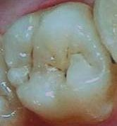
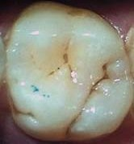
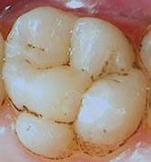
На перших молярах верхньої щелепи найчастіше можна спостерігати I-II, рідше III ступінь вираженості горбика Карабеллі. На других молярах горбик Карабеллі часто не визначається (I ступінь) або в деяких випадках можна спостерігати II ступінь вираженості горбика. Так, оклюзійна поверхня третіх молярів характеризується різною кількістю горбиків, що позначається і на анатомічній формі коронки. За нашими спостереженнями, кількість горбиків варіювала від 2 до 11. Горбик Карабеллі часто не визначається як самостійне утворення, зливаючись з горбиками, що формують спіральну дугу на дистальній поверхні коронки зуба.
Таким чином, слід вважати, що горбик Карабеллі не аномальний, як це традиційно описується в науковій літературі, а є частиною вестибулярно-дистально-піднебінної дуги, утвореної медіальним піднебінним, медіальним і дистальним вестибулярними горбиками, дистальним проміжним горбиком і дистальним піднебінним горбиком (рис. 9).
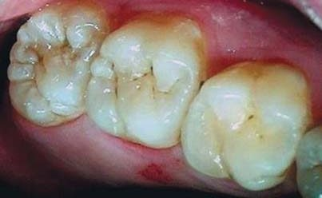
Різний ступінь його вираженості, на нашу думку, є ознакою редукції цього структурного утворення, поряд, наприклад, з найбільш варіабельною дистальною частиною п’ятигорбикового першого постійного моляра нижньої щелепи (гіпоконід — вестибулярний дистальний горбик, гіпоконулід — дистальний горбик і ентоконід — язичний дистальний горбик), в якій за відсутності дистального горбика в результаті редукції коронка моляра набуває чотиригорбикової форми (рис. 10).
Додатковий дистальний горбик на оклюзійній поверхні верхнього першого моляра, ймовірно, є прямим аналогом дистального горбика на п’ятигорбиковому нижньому першому молярі, з єдиною різницею, що додатковий дистальний горбик менш виражений, а іноді язичний дистальний горбик може бути досить великим і «затьмарювати» своїм розміром даний горбик.
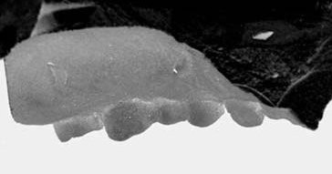
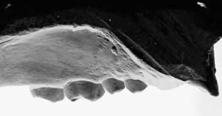
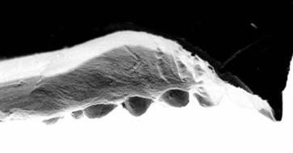
Як вказує М. О. Заренков (2009), «з великого розмаїття математичних спіралей натуралістами освоєні архімедова (арифметична) і логарифмічна спіралі. Це аж ніяк не означає непридатність для біосиметрики інших спіралей».4, с. 89 При вивченні понад 60 гіпсових діагностичних моделей верхньої щелепи, отриманих у пацієнтів віком 18-55 років, було встановлено прояв трьох основних типів спіралей у формі твердого піднебіння: 1) спіраль гіперболічна; 2) спіраль «жезл»; 3) спіраль логарифмічна (рис. 11, 12).
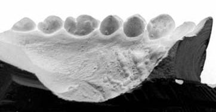
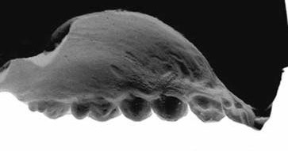
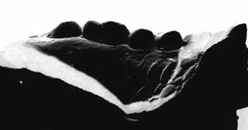
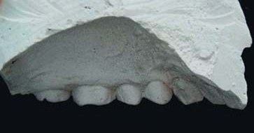
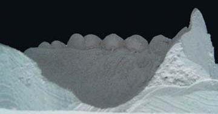
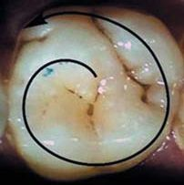
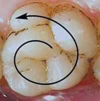
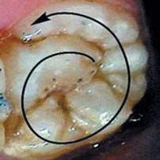
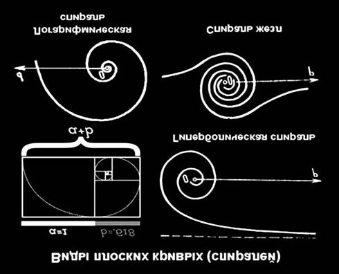
Оклюзійна крива Шпеє являє собою лінію, що проходить по оклюзійній поверхні зубів у бічній проєкції і спрямована опуклістю вниз з найглибшої точки в зоні перших молярів, забезпечуючи стійкість і оптимальне функціонування зубних рядів. Прийнято вважати, що центр кола, частиною якого є ця крива, розташований у середині очної орбіти. Її вперше описав німецький анатом і ембріолог Ф. Шпеє (1855-1937), який вивчав особливості анатомічного взаємовідношення між зубами людини у сагітальній площині.
За пропонованою автором гіпотезою, сагітальна оклюзійна крива є не частиною кола, а спіраллю росту. «Усі спіральні симетрії засновані на здійсненні трьох перетворень: зрушення по променю, поворот навколо центра О на кут φ і масштабування довжини радіуса при повороті на кут φ. Порядок виконання перетворень значення не має» (цит. за М. А. Заренковим, 2009).4 У природних біоморф є вектор росту одного напряму — від центру О.4,6 Таким чином, на підставі загальних законів формоутворення і росту як динамічних процесів, що існують у природі, оклюзійна крива Шпеє за своєю суттю ближча до спіральної біосиметрії, ніж до кола, вона являє собою математичний образ кінцевої фігури із замкнутим контуром утвореної плавної кривої.
У низці досліджень зустрічаємо вагомі аргументи на користь неспроможності гіпотез про улаштованість органів єдино за критерієм функціональної пристосованості, як, наприклад, про спіральну форму равлика людського вуха.3,6 Наводяться переконливі докази того, що всі процеси у природі — це гомології, оскільки всі основні структури і функції містять мінеральний компонент, який був очевидний до того, як у загальний еволюційний процес були включені ген і хромосома. З точки зору А. Ліма-де-Фарія (1991), це зумовлено специфікою фізико-хімічних взаємодій, що беруть участь в еволюційному перетворенні елементарних частинок, хімічних елементів, мінералів, макромолекул і живих організмів.23 Слід зазначити, що вперше подібні думки висловив Е. Ж. Сент-Ілер (1772-1844), що стояв на позиціях ідеї єдності плану організації всіх живих організмів, який може варіювати в результаті трансформації під дією мінливих умов середовища. У роботі «Філософія анатомії» він виклав «теорію аналогів» (гомологів за пізнішою термінологією), поклавши її в основу порівняння різних організмів.
Біомеханіка вивчає особливості будови, деформаційні і міцнісні властивості, а також руйнування різних тканин і систем організму. Біомеханічні властивості будь-якого організму залежать від його індивідуальних особливостей будови і форми, віку, функціонального стану, зовнішніх факторів. Отже, формоутворення, структура тканин, органів і систем становлять науково-практичний інтерес з точки зору їх біомеханічних властивостей, що дозволяють протистояти впливу механічних факторів під час виконання ними відповідних функцій. З огляду на це, ряд питань формоутворення і особливостей структури твердих тканин зубів, що зазнають великого навантаження під час акту жування, вимагає подальшого вивчення.
Звернімося до одного факту зі сфери фізіології рослин. У листі і стеблах рослин є спеціальні опорні стабілізуючі елементи, що забезпечують механічну стійкість рослинної тканини, так звані склеренхимні (паличкоподібні) клітини. Склеренхима — найважливіша механічна тканина, яка зустрічається в органах майже всіх вищих рослин. Ці клітини не мають метаболічно активного клітинного вмісту (ядро і протоплазма в них рано відмирають), а їх порожнини заповнені повітрям. Такі клітини є винятково пасивними опорними елементами, що додають жорсткості листку або стеблу. Витягнута в довжину склеренхимна клітина за рахунок свого положення і форми запобігає вигину перпендикулярно площині листка. У стеблах рослин, що зазнають згинальних навантажень, жорсткі профільовані стрижні, що складаються з однієї або кількох склеренхимних клітин, з’єднуються у так звані опорно-механічні системи. Крім того, жорсткості листка як цілого сприяє осмотичний тиск соку в ньому.24
Деформація матеріального тіла може бути викликана зовнішнім навантаженням у результаті зсуву частинок у тілі, що виключає рухи останнього. Розрізняють оборотну і незворотну деформацію. Одним з типів незворотної деформації є пластична деформація від напруги, після досягнення певного порогового значення, відомого як межа пружності, в результаті виникнення механізмів ковзання або дислокацій на атомному рівні. При вивченні результатів мікроскопії видалених зубів людини і тимчасового ікла кішки по цифрових фотографіях було встановлено, що на оклюзійній і проксимальній поверхнях зубів утворилися потовщені ділянки («напливи») емалі під впливом жувального тиску. Їх появу в одних випадках, ймовірно, слід розцінювати як результат недостатньої мінералізації емалі, а в інших — у зв’язку з підвищеним функціональним навантаженням (рис. 13).
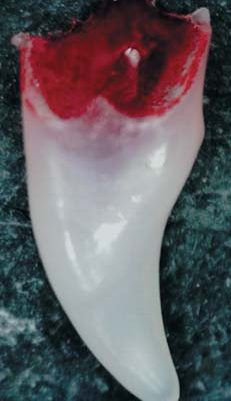
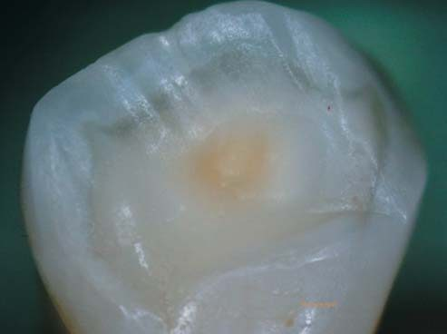
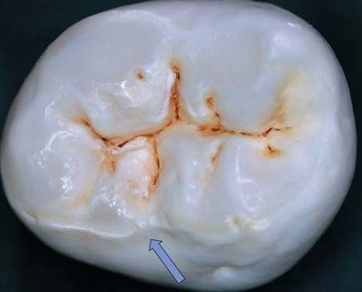
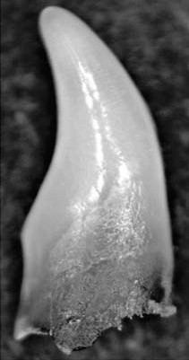
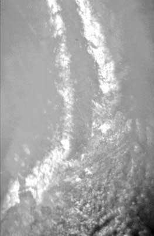
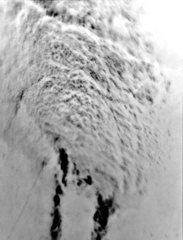
Уміщені фото демонструють, що пластична деформація призводить до зменшення об’єму емалі в зоні тиску і збільшення в напрямку вектора сили через деформацію і зміщення, що підвищує локально її властивості міцності. Подібний ефект слід розглядати як компенсаторну реакцію і формування контрфорсу для стійкості до згинальних навантажень. Іншими словами, емаль у цій ділянці набуває гофровану поверхню і, відповідно, додаткову жорсткість. Принцип гофрування широко застосовується в техніці і будівництві для підвищення міцності конструкційних матеріалів.
Помічено, що при нормальній будові емалі зубів людини деякі ділянки міжпризматичної речовини (емалеві пластинки — ламели, пучки, веретена — колби) є недостатньо звапнілими, але відрізняються одна від одної своєю формою і положенням у товщі емалі. Емалеві пучки мають вигляд деревовидних утворень, які проходять глибоко в емаль і анастомозують між собою. Вони, як і веретена, розташовані у придентинному шарі емалі, є, мабуть, морфологічним варіантом відростків одонтобластів, що виконують, на думку багатьох дослідників, соконосну живильну роль у структурі емалі. Емалеві пластинки порівнюють з тонкими перегородками листкоподібної (конусоподібної) форми, які йдуть уздовж коронки до емалево-дентинної межі і ділять емаль на ряд сегментів. Вважається, що вони мають особливе значення у фізіології і патології зуба, поскільки осередки каріозного ураження нерідко локалізуються біля емалевих пластинок.8,9,20
У книзі «Основи фізіології зуба» В. Р. Окушко (2005) описує ці структури емалі зуба так: «Від дентиноемалевого з’єднання в напрямку поверхні емалі, крізь її товщу, спрямовуються органічні пластини, сукупність яких формує своєрідну систему меридіанів і мікротрубочок з центром сходження біля вершин горбиків. Залежно від напрямку шліфа ці утворення набувають вигляду ламел або пучків. По них до зовнішніх пор емалі і рухається рідина, що забезпечує мінливість твердих структур».15
Таким чином, склеренхимні клітини листка, тонкі перегородки листоподібної (конусоподібної) форми в емалі зубів і багатокамерність у будові раковин за своєю функцією пов’язані між собою і забезпечують жорсткість і міцність у своїх структурах, а в зубах додатково сприяють розподілу оклюзійного навантаження між сегментами. Якщо враховувати той факт, що ці утворення містяться у великій кількості в зоні шийки зуба, де концентрується найбільше напруження під час жувальної функції, стає зрозумілим справжній сенс їх наявності. Імовірно, спільно з емалевими призмами вони зменшують утворення внутрішніх напружень у зубі під час функції жування (рис. 14).
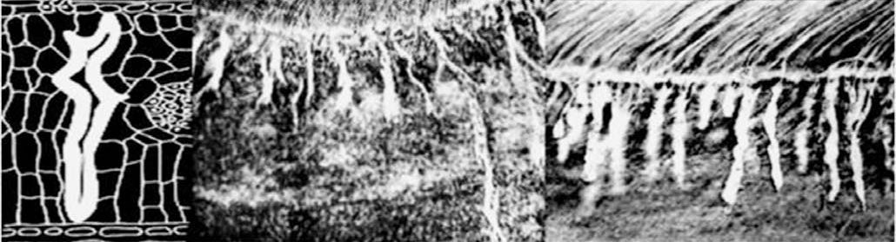
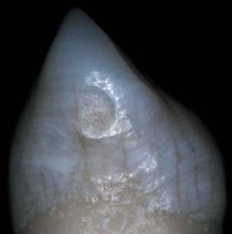
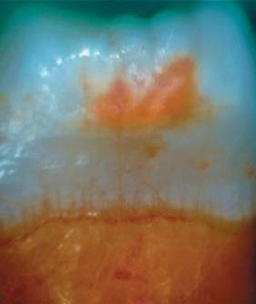
Результати вивчення ЕЦМ на поверхні зубів на цифрових фото дозволили підтвердити наявність емалевих пластинок, що відрізняються довжиною і шириною. Окремі з них доходять до проксимальних контактних майданчиків (рис. 14).
Відомо, що на поперечних шліфах зуба так звані лінії, або смуги, Ретціуса розташовуються у вигляді концентричних кіл, порівнюваних деякими авторами з річними кільцями росту на поперечному зрізі стовбура дерева. Вони являють собою межі між шарами емалі, що послідовно виникають у процесі нормального розвитку зуба, і є ділянками зі зниженим вмістом солей вапна. Ще Г. Густафсон (Gustafson, 1959) назвала їх функціональними лініями Ретціуса, бо, на її думку, вони є нормальним фізіологічним явищем, пов’язаним з процесом формування вигинів емалевих призм, в результаті якого коронка зуба, що розвивається, поступово набуває свою остаточну форму і гладеньку поверхню. Однак поява ліній Ретціуса в надмірній кількості може бути ознакою порушень в утворенні органічної матриці емалі, а не в її звапнінні. Такі лінії Густафсон назвала патологічними. Їх виникнення пов’язане з відкладенням солей кальцію як у бік підвищеної мінералізації, так і, навпаки, в бік її зниження, що призводить до зменшення відстані між окремими лініями Ретціуса.8,9 Таке явище можна спостерігати і в природі, коли стоншення річних кілець у дерев свідчить про уповільнення їх росту при зниженні температури на Землі, що діє як несприятливий кліматичний фактор.
Крім того, Шур і Гофман (1939) описують інші шари — контурні лінії Оуена, які утворюються в результаті порушення кальцинації і можуть захоплювати одну або кілька 16-мікронних пар. Про «дивовижну правильність, з якою лінії Ретціуса розташовуються в емалі зубів ряду тварин-ссавців і людини», згадується в працях Л. І. Фаліна (1963),8 В. В. Гемонова і співавт. (2002).9 На думку Г. Густафсон (1959), у деяких випадках лінії Ретціуса виникають завдяки утворенню по ходу призм коротких вигинів, які розташовуються в площині, паралельній довгій осі зуба.8,9
У нормі найчисельніші і разом з тим найкоротші лінії Ретціуса містяться в емалі, що покриває бічні поверхні коронки зуба. Починаючись біля емалево-дентинної межі і навскоси перетинаючи всю товщу емалі, вони закінчуються на її поверхні валиками (перикіматами), розташованими паралельними рядами і відокремленими один від одного неглибокими борозенками.
У напрямку до жувальної поверхні зуба лінії Ретціуса змінюють свій напрямок, стаючи довшими, і деякі з них, починаючись біля емалево-дентинної межі на бічній поверхні зуба, дугоподібно огинають ділянку жувального горбика і закінчуються біля емалево-дентинної межі, але вже на жувальній поверхні зуба, утворюючи свого роду аркове покриття.8,9
При розвитку коронки як тимчасового зуба, так і постійного найраніше з’являється дентин, в утворенні якого активну участь беруть одонтобласти. Найбільш раннє звапніння дентину спостерігається на вершині зубного сосочка, тобто в зоні майбутнього ріжучого краю зуба або його жувальних горбиків, і має назву зубного черепка. В однокореневих зубах на ріжучому краї коронки виникає один такий черепок. При формуванні багатокореневих зубів кількість черепків звапнілого дентину відповідає кількості майбутніх жувальних горбиків. Поступово зубні черепки зростаються між собою, і по всій внутрішній поверхні емалевого органу відкладається дентин, який є першою виниклою твердої субстанцією зуба. Починаючись на вершині зубного сосочка, формоутворювальні процеси потім поширюються на бічні відділи коронки зуба. Однак ще до цього моменту адамантобласти емалевого органу починають на поверхні дентину будувати емаль.8,9,20 Залежно від індивідуальних особливостей будови однокореневих зубів, під час їх розвитку, ймовірно, на ріжучому краї може виникати більш ніж один такий зубний черепок, а крім того, слід враховувати і язичні горбики. При уважному прочитанні виявимо, що лінії Ретціуса мають спіральний напрямок у тканини емалі.47
В основі теломної (від грец. telos — кінець) теорії німецького вченого В. Циммермана (1930, 1965) лежить поняття телома — циліндричної ділянки тіла рослини. Згідно з його уявленням, еволюційно органи вищих рослин розвинулися з початкової структури, що дихотомічно розгалужується, за допомогою кількох елементарних морфогенетичних процесів та осьового зрощення з утворенням судинної системи. У ході еволюції відбулася редукція кількості порядків галуження, що позначилося на спрощенні будови рослини і призвело до появи листків зі сплощених і зрощених між собою систем теломів. Під час росту зазвичай має місце неповна (а) або повна (б) дихотомія пари гілок (дихоподія). Інші типи галуження є лише її модифікаціями (рис. 15).4 Цей природний феномен дає підставу для пояснення загальних еволюційних біоморфологічних закономірностей у формуванні анатомічної форми, і зокрема емалевих валиків і горбиків на ріжучому краї у фронтальній групі зубів.
С. В. Дмитрієнко і співавт. (2001), у відповідності з даними Suzuki, Sakai (1965), вказують на існування трьох типів рельєфу вестибулярної поверхні верхніх різців:
- Вертикальні емалеві валики виражені в медіальній і дистальній третинах коронки, серединний емалевий валик не виражений.
- На вестибулярній поверхні є кілька вертикальних емалевих валиків, з яких однаково помітні медіальний, серединний і дистальний.
- Розміри серединного емалевого валика значно переважають над крайовими, і коронка по вертикальній осі опукла в середній третині.17
В. А. Переверзєв (1987) вказує на існування чотирьох типів вестибулярної поверхні верхніх фронтальних різців.25
Література
- Попов В. Г. Главная симметрия природы. С.-Пб.: «АНАТОЛИЯ», 2005. — С. 66.
- Вейль Г. Симметрия. М.: «ЛКИ», 2007. — С. 107–111.
- Петухов С. В. Биомеханика, бионика и симметрия. М.: «Наука», 1981. — 240 с.
- Заренков Н. А. Биосимметрика. М.: Книж. дом «ЛИБРОКОМ», 2009. — 309 с.
- Голдштейн Р. Эстетическая стоматология. 2-ое изд. Том 1, 2003. — 496 с.
- Шаскольская М. П. Очерки о свойствах кристаллов. М.: «Наука», 1978. — С. 165–169.
- Бегун П. И., Шукейло Ю. А. Биомеханика. С.-Пб.: «Политехника», 2000. — 463 с.
- Фалин Л. И. Гистология и эмбриология полости рта и зубов. М., 1963. — 219 с.
- Гемонов В. В., Лаврова Э. Н., Фалин Л. И. Развитие и строение органов ротовой полости и зубов. М.: ГОУ ВУНМЦ МЗ РФ, 2002. — 256 с.
- Васильев В. Г. Роль коллагеновых волокон периодонта в передаче жевательного давления на стенку зубной альвеолы // Стоматология. — 1982. — № 4. — С. 19–21.
- Гаврилов Е. И., Щербаков А. С. Ортопедическая стоматология. М.: «Медицина», 1984. — 576 с.
- Еловикова А. Н., Няшин М. Ю., Симановская Е. Ю. и др. Биомеханические основы лечения зубочелюстных аномалий // Стоматология. — 2002. — № 3. — С. 51–54.
- Бетельман А. И. Зубное протезирование. (Клиника и протезирование дефектов и зубных рядов). Киев: Гос. мед. изд-во, 1956. — С. 22.
- Бушан М. Г. Патологическая стираемость зубов и ее осложнения. Кишинев: Изд-во «Штиинца», 1979. — 183 с.
- Окушко В. Р. Основы физиологии зуба: Учебник для врачей стоматологов и студентов медицинских университетов. — Тирасполь: Изд-во Придн.-го ун-та, 2005. — С. 89.
- Радлинский С. В. Реставрация контактных поверхностей в нижних передних зубах // ДентАрт.
- Дмитриенко С. В., Иванов Л. П., Краюшкин А. И., Пожарницкая М. М. Практическое руководство по моделированию зубов. М., 2001. — 238 с.
- Шухов В. Г. Строительная механика. Избранные труды. М.: «Наука», 1977. — 193 с.
- Курсанов Л. И., Комарницкий Н. А., Мейер К. И., Раздорский В. Ф., Уранов А. А. Ботаника. Том 1. Анатомия и морфология. М.: Просвещение; Изд. 7-е, испр. и доп., 1966. — 424 с.
- Кудрин И. С. Анатомия органов полости рта. М.: «Медицина», 1968. — 212 с.
- Луцкая И. К. Практическая стоматология: Справ. пособие. 3-е изд. Мн.: Белорус. наука, 2001. — С. 127–128.
- Ломиашвили Л. М., Аюпова Л. Г. Художественное моделирование и реставрация зубов. М.: «Медицинская книга», 2004. — С. 86.
- Лима-де-Фариа А. Эволюция без отбора: Автоэволюция формы и медицины. М.: Изд-во «Мир» (пер. з англ.), 1991. — С. 41–43.
- Раздорский В. Ф. Архитектоника растений. М.: «Советская наука», 1955. — 430 с.
- Переверзев В. А. Медицинская эстетика. Волгоград: Ниж.-Волж. кн. изд-во, 1987. — 240 с.
- Стахов А., Слученкова А., Щербаков И. Код да Винчи и ряды Фибоначчи. — С.-Пб.: «Питер», 2006. — 320 с.
- Радзюкевич А. В. Метод геометрического построения спиральных решеток. — 2007.
- Боровский Е. В., Леонтьев В. К. Биология полости рта. М.: «Медицина», 1991. — С. 94.
- Шванн Т. Микроскопические исследования. О соответствии в структуре и росте животных и растений. М., Л., 1939.
- Бушан М. Г., Кодола Н. А., Кулаженко В. И. Кариес зубов, лечение и профилактика с применением вакуум-электрофореза. Кишинев: «Картя Молдовеняскэ», 1979. — 283 с.
- Костиленко Ю. П., Бойко И. В. Структура зубной эмали и ее связь с дентином // Стоматология. — Т. 84. — 2005. — № 5.
- Гурин Н. А. Растровая электронная микроскопия твердых тканей зуба // Стоматология. — Т. 55. — 1976. — № 3. — С. 70–77.
- Образцов И. Ф., Адамович И. С., Барер А. С. и др. Проблемы прочности в биомеханике. М.: «Высш. шк.», 1988. — 311 с.